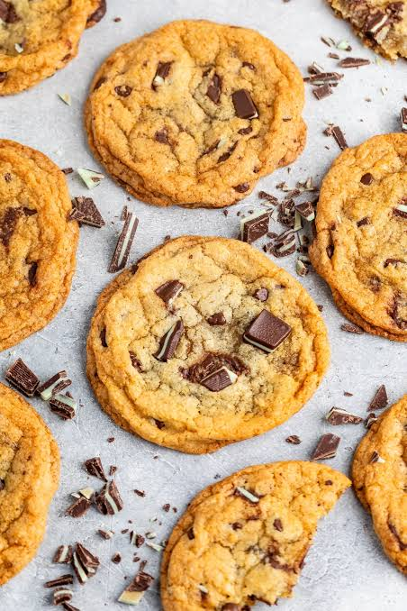

Chocolate chip cookies recipe

About the dish:
This is a classic and delicious recipe for chocolate chip cookies that are crispy on the outside and chewy on the inside.
Ingredients:
- 2 1/4 cups all-purpose flour
- 1 teaspoon baking soda
- 1 teaspoon salt
- 1 cup (2 sticks) unsalted butter, softened
- 3/4 cup granulated sugar
- 3/4 cup packed brown sugar
- 1 teaspoon vanilla extract
- 2 large eggs
- 2 cups (12-oz. pkg.) semi-sweet chocolate chips
Instructions:
- Preheat the oven to 375°F (190°C).
- In a small bowl, combine the flour, baking soda, and salt. Set aside.
- In a large mixing bowl, beat the softened butter, granulated sugar, brown sugar, and vanilla extract until creamy.
- Add the eggs one at a time, beating well after each addition.
- Gradually beat in the flour mixture until well combined.
- Stir in the chocolate chips.
- Drop rounded tablespoons of dough onto ungreased baking sheets.
- Bake for 9 to 11 minutes or until golden brown.
- Remove from the oven and let cool on the baking sheets for 2 minutes before transferring to wire racks to cool completely.
Home